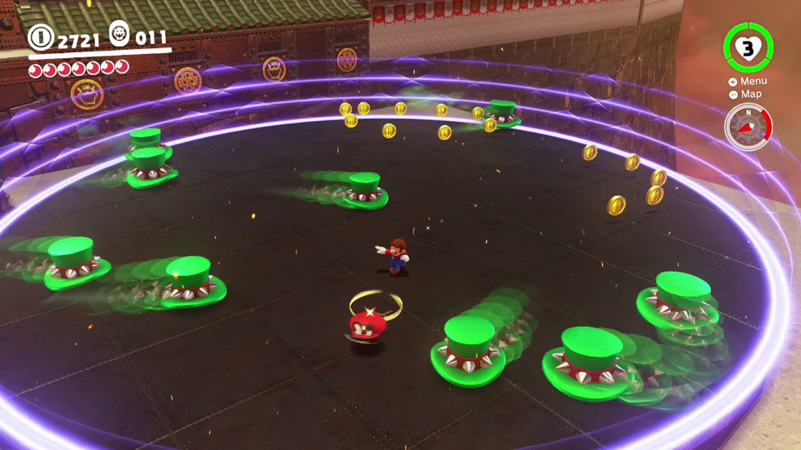
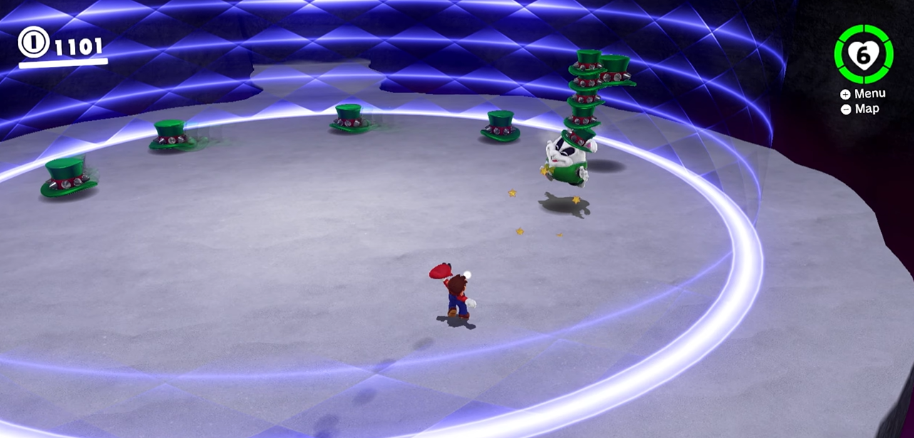
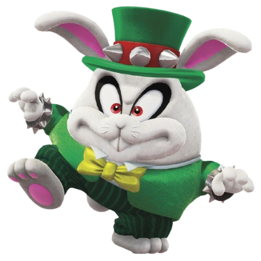
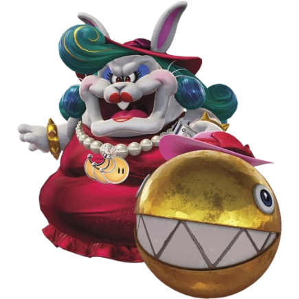
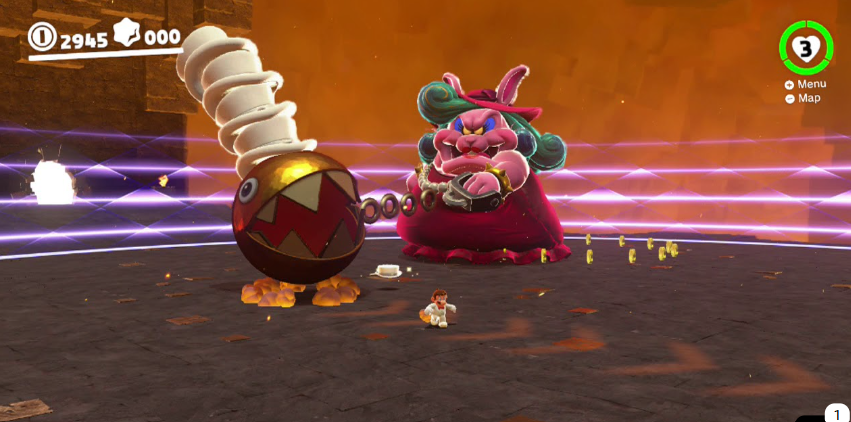
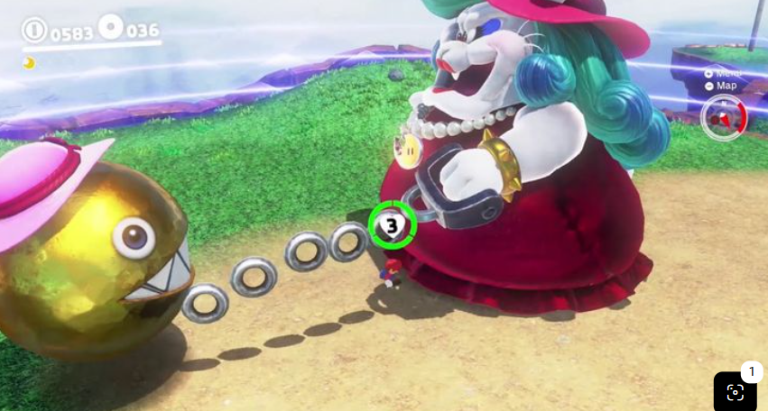
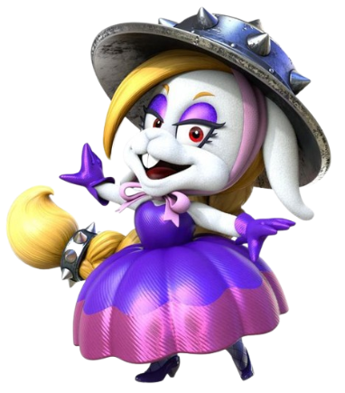
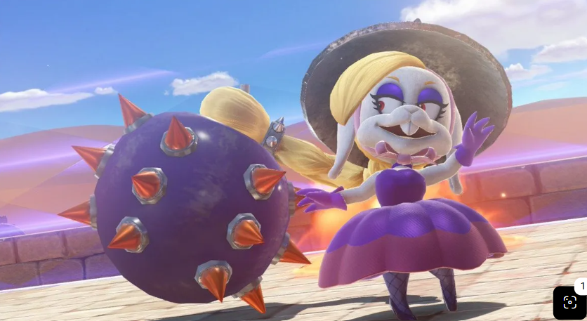
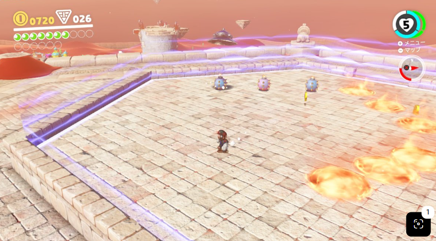
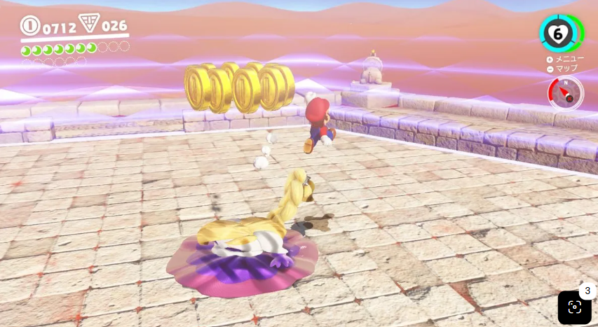

Aquí escribirás la primera fase del combate. Explica cómo atacar al jefe y cuáles son sus puntos débiles.
También puedes añadir consejos sobre los objetos del escenario, los movimientos especiales o cualquier estrategia.
Este espacio está pensado para que escribas bastante texto, igual que en la guía de la fotografía.



Madame Broode es uno de los personajes enemigos y jefes de Super Mario Odyssey. Es una mujer de gran tamaño que pertenece a los Broodals, un grupo de conejos que trabaja para Bowser y se encarga de organizar su boda con la princesa Peach. Madame Broode destaca por su aspecto elegante, su sombrero y su personalidad autoritaria. Durante los combates utiliza a su mascota, un Chain Chomp llamado Chompette, al que controla mediante una cadena para atacar a Mario. Su principal estrategia consiste en lanzar a Chompette contra él para intentar derrotarlo. Sin embargo, Mario puede utilizar su sombrero Cappy para capturar al Chain Chomp y aprovechar su fuerza para atacar a Madame Broode.
Es uno de los primeros jefes importantes que aparecen en la aventura y representa uno de los desafíos que Mario debe superar para recuperar los objetos robados por Bowser y rescatar a Peach.



Harriet es una de las integrantes de los Broodals, un grupo de conejos que trabaja para Bowser en Super Mario Odyssey. Es una de las jefas del juego y se caracteriza por utilizar bombas y explosivos para atacar a Mario.
Habilidades de Harriet:
- Movilidad: puede saltar y desplazarse para esquivar ataques.
- Explosiones: provoca explosiones que pueden dañar a Mario.



